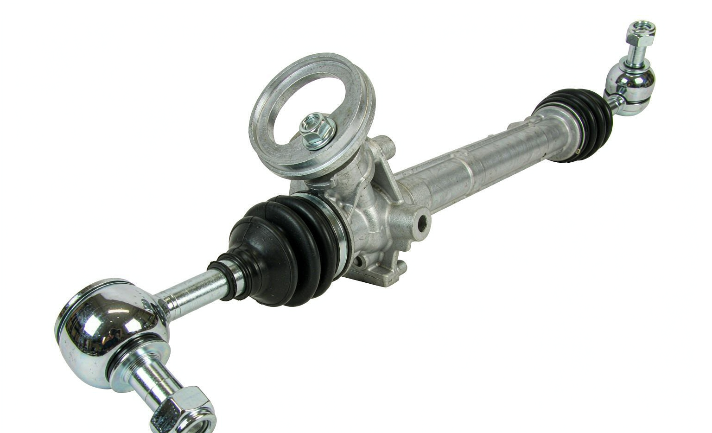

The 48001-ED01A oem 48001-ew000 auto power steering rack pinion gear is part of KingMay's Hyundai-Kia specialty line. Distributors in the Middle East, Africa and Latin America combine it with other fast-moving suspension, steering & brake parts to reach full-container thresholds.
OE 48001-ED01A is a OEM 48001-EW000 Auto Power Steering Rack Pinion Gear reference. In the Hyundai-Kia numbering system the prefix 48001 denotes the OEM 48001-EW000 Auto Power Steering Rack family, which holds 8 references in KingMay's Guangzhou catalog. Wholesale MOQ is 10 pieces; quotes are issued within one business day.
How 48001-ED01A decodes in the Hyundai-Kia catalog system. The prefix identifies the component family; the suffix carries model and variant information.
| Field | Value |
|---|---|
| Full reference | 48001-ED01A |
| Normalized (no hyphen) | 48001ED01A |
| Prefix (family code) | 48001 |
| Prefix maps to | OEM 48001-EW000 Auto Power Steering Rack |
| References sharing prefix 48001 | 8 in KingMay catalog |
| Numbering family | Hyundai-Kia 5+5 format |

Other part numbers frequently ordered together with 48001-ED01A by wholesale clients.
| OE Number | Component |
|---|---|
| 48001-CJ41A | OEM 48001-EW000 Auto Power Steering Rack Pinion Gear for Nis |
| 48001-EW000 | OEM 48001-EW000 Auto Power Steering Rack Pinion Gear for Nis |
| 0002500315 | Release Bearing for MERCEDES-BENZ G-CLASS, PUCH G-MODELL (W4 |
| 0002506115 | Release Bearing for MERCEDES-BENZ 190 (W201) |
| 0002506215 | Release Bearing for MERCEDES-BENZ E-CLASS, PUCH G-MODELL (W4 |
| 0002541408 | Release Bearing for |
| 0002541608 | Release Bearing for MERCEDES-BENZ SPRINTER 2-t Bus (B901, B9 |
| 0002542908 | Release Bearing for MERCEDES-BENZ A-CLASS (W169), B-CLASS Sp |
References that share the 48001 family prefix with 48001-ED01A. In the Hyundai-Kia numbering system the leading five digits identify the component family, so these numbers usually belong to the same assembly group and are ordered together by distributors building a consolidated shipment. Always confirm the variant suffix, connector layout and dimensions before substituting one reference for another.
Other part numbers in the suspension, steering & brake group that wholesale clients order alongside OE 48001-ED01A. Grouping mixed references into one shipment is how most importers reach full-container freight thresholds.
Browse all 2,534 Suspension, Steering & Brake OE references → · ← Previous in Suspension, Steering & Brake · Next in Suspension, Steering & Brake →
| Item | Detail |
|---|---|
| Export packing | Neutral carton, inner foam protection; custom labels on request |
| Lead time | 7 working days (stock) · 25-35 days (production run) |
| Shipping terms | FOB Guangzhou / Shenzhen; CIF & DDP negotiable |
| Payment | T/T, LC at sight for contracts; sample orders by T/T |
| QC documentation | Packing list + photo report + dimension check per shipment |
OE 48001-ED01A is a factory reference for oem 48001-ew000 auto power steering rack pinion gear on selected Nissan models. The full fitment list is published in the Applications table above — verify trim level and build year against your local fleet before placing a wholesale order.
Most Nissan service schedules treat the oem 48001-ew000 auto power steering rack pinion gear as a wear item with inspection every 20,000-30,000 km. Replace it at the first sign of leakage, noise or performance drop rather than on a fixed mileage, because duty cycle varies by climate and driving style.
The Related OE References table above lists the most common alternates for 48001-ED01A. Cross-references work because the underlying engineering specification is shared across the suspension, steering & brake family — always verify physical dimensions and connector layout when swapping references.
Standard export packing uses neutral cartons with inner protection. Custom labeling with your brand, barcodes and box specifications is available on request for volume orders.
Request a wholesale quote for 48001-ED01A through our contact page — most quotations return within one business day. All 48001-ED01A shipments leave with a packing list, photo documentation and QC report. Combined orders with other Hyundai-Kia references can share one container to cut landed cost. Payment terms are negotiable for established distributors; first-time buyers are welcome to start with a sample lot.
Send quantity + destination port. Quotations typically return within one business day.